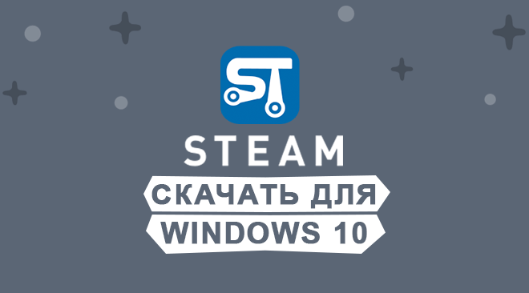
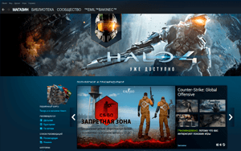
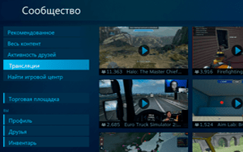

|  | Категория: | Для скачивания игр |
| Поддерживаемые ОС: | Windows 10 | |
| Разрядность: | 32 bit, 64 bit, x32, x64 | |
| Для устройств: | Компьютер | |
| Язык интерфейса: | на Русском | |
| Версия: | Последняя | |
| Разработчик: | Valve |
Довольно таки просто скачать Стим на Windows 10 так как он является игровой платформой для скачивания и установки только качественного игрового контента. Каждый пользователь любит проводить время за монитором компьютера. Существует множество мест для скачивания игр, однако, существует опасность подцепить вирус или установить пиратскую версию программы, которая никогда не будет работать корректно, чтобы избежать неприятностей установки игр с непроверенных источников скачайте Steam.
|  |  |
{kind=link}
{kind=link}
{kind=link}
Steam для Windows 10 на компьютер
Он представляет собой не только сервис для скачивания игр, но и своего рода социальной сетью, где каждый пользователь имеет персональную страничку, может обмениваться информацией с другими участниками путем использования текстового и голосового чата, дарить подарки и транслировать игровые моменты. Все игры распределены по категориям. Разработчиком утилиты является корпорация Valve, однако помимо своих игр Стим предлагает к скачиванию продукцию других разработчиков, а помимо платных также бесплатные игры, в которые можно играть вместе с другими пользователями.
Для установки платформы на компьютер, необходимо пройти процедуру регистрации и идентификации на сайте. Там же создается страница пользователя и создается игровой аккаунт. После этого можно скачать и установить программу на компьютер, для этого спуститесь ниже к блоку загрузок и нажмите кнопку «Скачать». Желательно выбрать путь установки программы на тот диск который больше по объёму. Для запуска приложения необходимо нажать на его иконку на рабочем столе. В открывшемся окне вводим данные аккаунта, созданного при регистрации. После завершения процедуры входа на рабочем столе отобразиться интерфейс Steam, отобразится вкладка библиотеки со всеми доступными приложениями для вас, на вкладке магазин можно купить любые доступные там игры.
Steam для версий windows:
Скачать Steam для windows 10 бесплатно
| Приложение | OS | Формат | Распаковщик | Версия | Загрузка |
|---|---|---|---|---|---|
| Steam | Windows 10 | x32 | OpenBox | Бесплатно (на русском) | |
| Steam | Windows 10 | x64 | OpenBox | Бесплатно (на русском) | |
| Steam | Windows 10 | x32 — x64 | OpenBox | Бесплатно (на русском) |
Как установить Steam для windows 10:
Запустите файл.
Ознакомьтесь с информацией и нажмите "Далее".
Нажмите "Далее", или снимите галочки с рекомендуемого ПО и нажмите "Далее". Если снять все галочки, рекомендуемое ПО не установится!
После всех шагов нажмите "Установить".
Платформа предлагает огромное количество игр, удобную скидочную систему «выходного дня», позволяющую сэкономить до 90% стоимости, бесплатные программы и возможность дарить подарки другим игрокам. Однако играть с друзьями в платные игры можно только, если они тоже проплатили данный контент. Утилита постоянно обновляется, совершенствуя свои возможности, и в дальнейшем разработчик планирует добавить библиотеку лицензионных фильмов для скачивания.
а есть игры с сеги давно искал где можно найти такие? ))
стим скачал и обновил, спасибо
я скиловый не читачек
обновляю а то что то подвисает предыдущая версия
стим это лучший магазин игр, вон ключей кучу навыбивал бесплатных
не пойму почему нет форточки в стиме?
Как и всегда топ, приложение!
скачал, после установки еще раз обновилась сама))
Скачала, все работает👍
я скачал стим и не заходица у меня виндулс 10 про 32 бит говорят нужно ранею версию венды
Здраствуйте Матвей! Вы попробуйте скачать версию 32-64 бит
Я хочу быть амогусом
будь им
скачиваю стим на виндовс 10 и 64 бит версию, скачиваю пишет… нужен виндовс 7 или более старую версию. Помогите пожалуйстааааа
у меня не получается скачать стим для вин. 10 выдается ошибка: «Steam не возможно запустить на этой версии виндовс из папки, путь к которой содержит символы из набора ASCII. Пожалуйста переустановите Steam в папку по умолчанию или смените ОС на виндовс 7 и более позднюю версию»
что делать?
Ну короче щяс буду проверять роботает или нет надеюсь работает